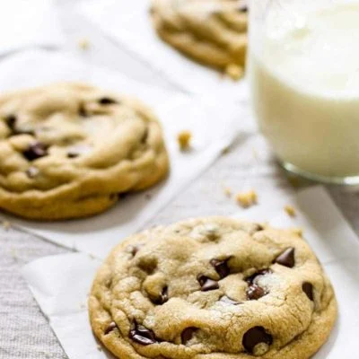

Dessert Recipes

We're not eating dinner just to get to dessert and we're certainly not having dessert FOR dinner but, like, just
in case...here are some ideas!
Top rated Recepies
COOKIE RECIPES
Please let it be known that we love a good cookie. Okay, who doesn’t?! Well, maybe there are some of you, but
we...don’t understand? Anyway, here is a batch of our tried and true favorites!
CAKE AND PIE RECIPES
We’re not ones to spend a lot of effort on super fussy or complicated baked goods, so rest assured that if
we have a cake or a pie on this site,
it’s because we would actually take the time to make it in real life (which honestly, better be pretty
minimal time. See: “real life”).
And if any do require any amount of fuss, we promise it is so totally worth iiiiiiiit.
DESSERT BAR RECIPES
We are Minnesota born and bred here at Pinch of Yum, so the bar is…a staple of our existence. Please explore
some of our favorites and then go ahead and whip up one or ten for your next craving (or potluck, if you’re
one of us!).